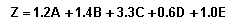

A mathematical formula developed in the 1960s by NYU Professor Edward Altman that attempts to express the chances of a public company going bankrupt within a two-year time period. The number produced by the model is referred to as the company's Z-score, which is a reasonably accurate predictor of future bankruptcy. The model is specified as:
Where: Z = Score A = Working Capital/Total Assets B = Retained Earnings/Total Assets C = Earnings Before Interest & Tax/Total Assets D = Market Value of Equity/Total Liabilities E = Sales/Total Assets
The zeta model returns a single number, the z-score, to represent the likelihood of a company going bankrupt in the next two years. The lower the z-score, the more likely a company is to go bankrupt. A z-score lower than 1.8 indicates that bankruptcy is likely, while scores greater than 3.0 indicate bankruptcy is unlikely to occur in the next two years. Companies that have a z-score between 1.8 and 3.0 are in the gray area, bankruptcy is not easily predicted one way or the other.
{kind=link}